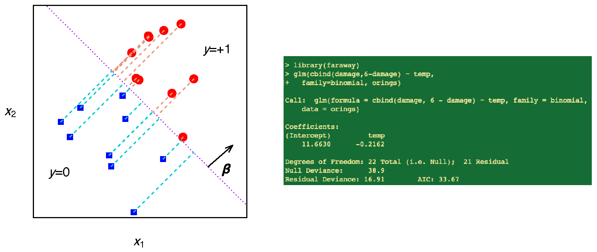
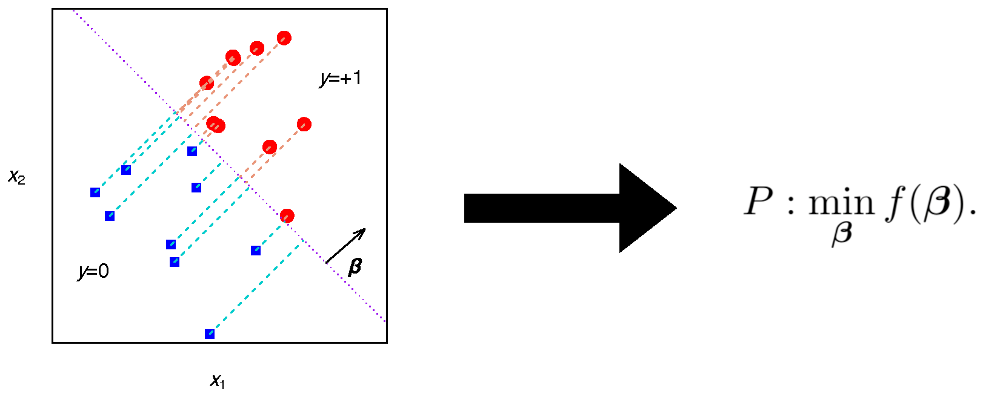
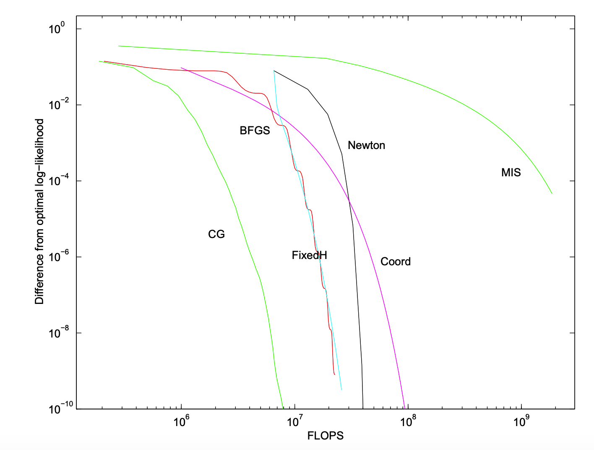
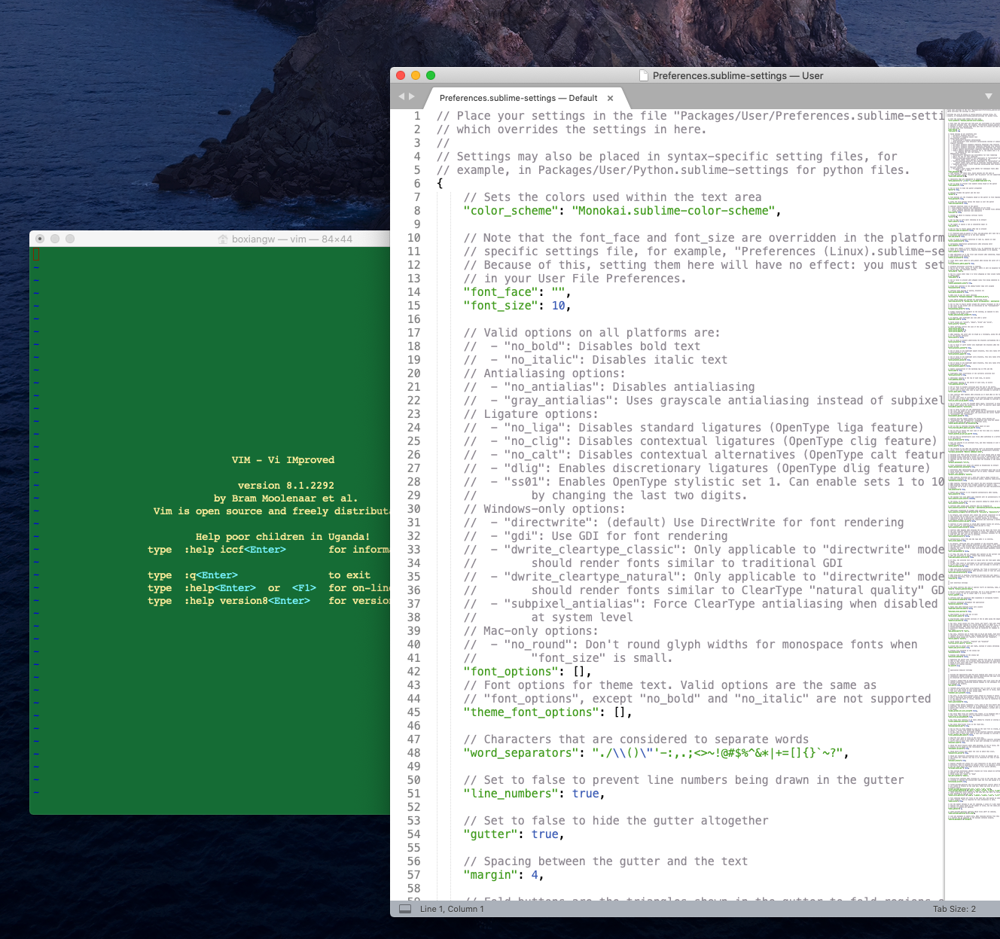
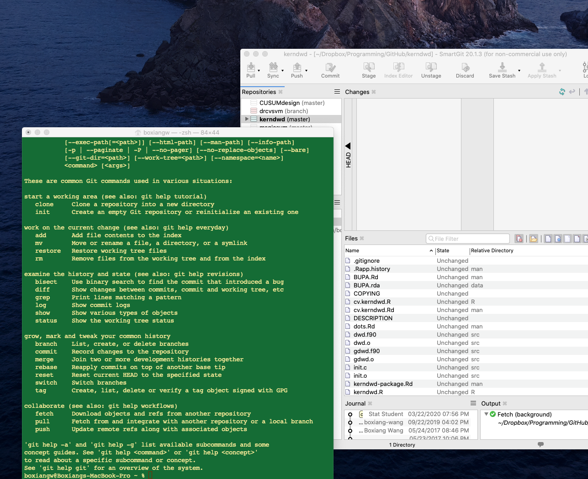
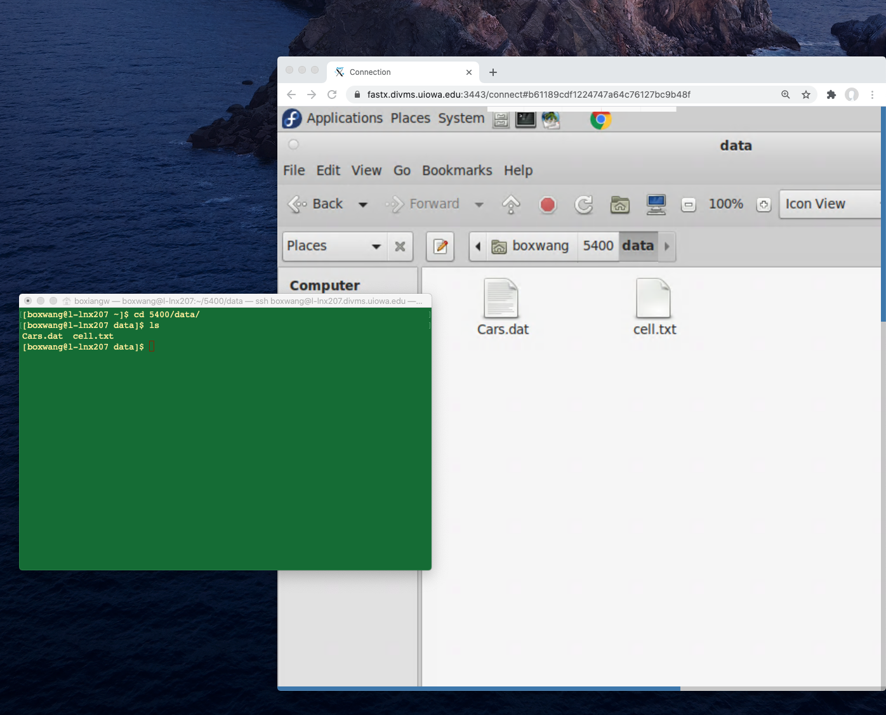
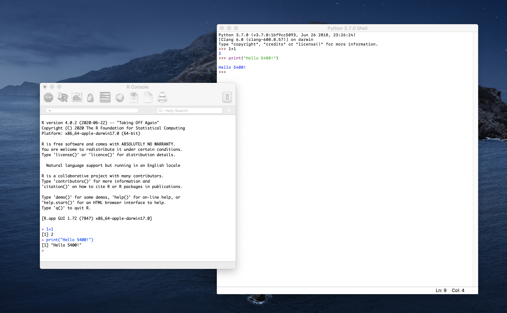
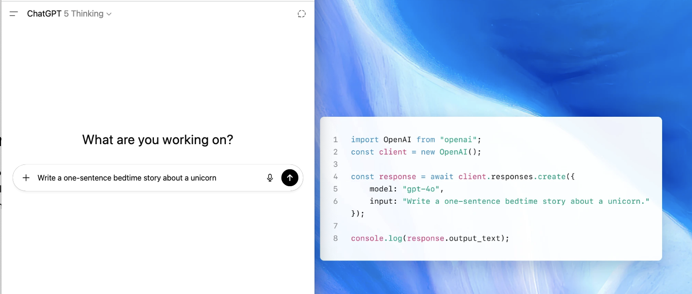

STAT:5400 Section 1.1 — Introduction
1 Why statistics & data science?
2009: “I keep saying that the sexy job in the next 10 years will be statisticians. And I’m not kidding.”
Hal Varian, Chief Economist at Google
2012: “Data Scientist: The Sexiest Job of the 21st Century”, Harvard Business Review.
2022: “Is Data Scientist Still the Sexiest Job of the 21st Century?”, Harvard Business Review.
- The U.S. Bureau of Labor Statistics predicts data science will see more growth than almost any other field between now and 2029. Data scientist jobs are projected to grow +36% (2023–2033), with over 20,000 openings per year.
- In 2024, the median pay was $112,590. The median salary for an experienced data scientist in California is approaching $200,000.
- Data Scientist is #6 Best STEM Job and #4 Best Technology Job.
2023–2025: the question changes. Nobody has written the next “sexiest job” piece; the discussion is now whether AI changes the job. A 2023 essay argued the title is “being challenged by AI”; a 2025 essay called it “the rise, fall, and evolution” of the job.
2026: the numbers say the job kept growing. BLS projects data-scientist employment +34% over 2024–2034, about 23,400 openings a year; for statisticians, growth “much faster than average” as well.
Ask AI:What are the current job outlook and median pay for data scientists and statisticians in the U.S.? Use the latest Bureau of Labor Statistics Occupational Outlook figures, and compare them with the 2023–2033 projection of +36% growth and the 2024 median pay of $112,590.
2 Data Science
- The science of data science focuses on the computation and inference for the data-driven analysis from the interdisciplinary perspectives.
- The term data science is believed to be credited to Jeff Wu, Georgia Tech.
- Statistical endeavors:
- Applied statistics and data analysis
- Development of statistical methods and software
- Research in statistical theory
- Computing essential to all of statistical endeavors.
- Computational intensive methods.
- Efficiency facilitate modern statistical research.
- Large-scale data pipelines; GPU/TPU-accelerated algorithms.
3 Data science: skills and jobs
- Core skill set.
- Statistics: modeling, inference, experimental design, uncertainty quantification
- Computing: Python/R, data engineering, GPU-accelerated methods, versioning
- Communication: domain knowledge, visualization, storytelling, ethics
What employers ask for (checked Aug 2026):
- Statistician — O*NET, U.S. Department of Labor, 15-2041: top skills mathematics, critical thinking, reading, listening, speaking; tools employers list: Python, R, SAS, SPSS, Tableau, Excel.
- Data scientist — O*NET, 15-2051: top skills mathematics, critical thinking, active learning, speaking; tools: Python, SQL, Git, Spark, TensorFlow/PyTorch, AWS, Tableau.
- Data-scientist job postings — 827 U.S. postings, 2025–26: machine learning 69%, Python 57%, R 33%, SQL 30%, NLP 19% (5% a year earlier); a graduate degree in 54% (PhD 24%, master’s 30%).
- What is rising — LinkedIn Skills on the Rise 2026: AI literacy, data-driven decision making, data storytelling, data governance and responsible AI. Indeed: 45% of data & analytics postings now mention AI.
- What people use — Stack Overflow Developer Survey 2025: Python 58%, SQL 59%, R 5%; 84% use or plan to use AI tools, 33% trust the answers.
- Live listings: Glassdoor, data scientist · BLS, data scientists · BLS, statisticians.
Read the two O*NET lists again: both start with mathematics and critical thinking; the tools come after. Your degree is the first part. This course is the second: Python, R, SQL, Git, and the habit of checking.
Ask AI:What are the key skills employers want from a statistician or a data scientist in 2026? Cite sources with dates.
Ask AI:What should a modern statistical computing course for statistics master's students look like in 2026? List the topics, the tools, and where AI fits.
3.1 A short history of generative AI
- 2017: the transformer.
- 2018–2020: GPT-1, BERT, GPT-2, then GPT-3 with 175 billion parameters. Trained on text; it saw little code.
- 2021: Codex and GitHub Copilot. Adding code to training data made models better at reasoning, not just at code. That is one reason “AI can code” arrived before “AI can reason”.
- November 30, 2022: ChatGPT. 100 million users in two months.
- 2023: GPT-4 (March), Llama with open weights, Claude, Gemini (December).
- 2024: GPT-4o, Claude 3, Gemini 1.5 with a million-token context, the first “reasoning” models (o1, September). Also the year ChatGPT said 9.11 is larger than 9.9.
- 2025: DeepSeek-R1 (January): open weights, a fraction of the cost. Agents and tool use everywhere. GPT-5 (August).
- 2026: GPT-5.6, Claude 5, Gemini 3.6, DeepSeek V4, and hundreds more. The model you use this semester will be replaced before you graduate; the statistics will not.
The short version, for this course. For the long one, IBM has a good history of AI.
4 AI for statistics, statistics for AI
Two directions, and this course runs both ways.
AI for statistics — the model as a tool in the statistician’s workflow.
- Writing and translating code: R ↔︎ Python, a loop → a vectorized version, a formula → a function (Section 2).
- Cleaning and extracting: messy text → a tidy table; structured output instead of prose (Section 6).
- Designing and explaining: draft a simulation study, explain an error message, summarize a paper — then you verify.
- Learning: the Ask AI buttons in these notes, and the course tutor.
- Agents: an AI that runs a small analysis end to end, from data to report, while you watch each step. In class we replay one on MorphMind (free tier, no payment required).
Statistical agents you can try today:
- ChatGPT: upload a file, it writes and runs Python and shows you the code.
- Claude: code execution in the chat, or Claude Code in a terminal.
- Gemini’s Data Science Agent in Colab: describe the goal, get a whole notebook.
- MorphMind AgentLab: a team of agents with receipts for every step.
- Open source: MetaGPT’s Data Interpreter, PandasAI, and agent frameworks such as LangGraph, CrewAI, and the OpenAI Agents SDK.
- From R:
ellmerwith tool calling (Section 6) lets you build a small one yourself.
Statistics for AI — the model as an object of statistical study.
- An LLM is a sampler: temperature and top-p are the same ideas as random-variate generation (Section 3).
- Evaluating a model is a simulation study: accuracy is an estimate, needs a confidence interval, and “how many test prompts?” is a sample-size question (Section 3).
- Bootstrap a benchmark score; test whether model A really beats model B (Section 4).
- Calibration, hallucination rates, and uncertainty for a black box (conformal prediction) — the statistician’s contribution to trustworthy AI (Section 6).
Statistics has an edge here. An LLM is a probability model: it generates text from a distribution and predicts the next word. Generating from a distribution, prediction, inference: these are the questions statistics has worked on for a century.
Then why are statisticians not playing a larger role in AI? Not for lack of ideas. What is missing is often the skills: large-scale computation, modern coding practice, text as data. This course is about closing that gap.
Reference: An Overview of Large Language Models for Statisticians, The American Statistician (2025), arXiv:2502.17814.
Ask AI:Give three concrete examples where statistical thinking (sampling, uncertainty, experimental design) is essential for building or evaluating large language models, and three where an LLM genuinely speeds up a statistician's daily work. For each, say what could go wrong if the statistician skipped verification.
5 Why learn to code when AI can code?
- Interviews have no AI in them.
- Anthropic bans it in live interviews and has dropped candidates who used it.
- Google is moving interviews back in person.
- The by-hand blocks and the midterm here are the same test.
- Many employers do not allow it.
- The big banks, Samsung, and Apple restricted ChatGPT.
- Patient records, clinical trials, government work: the data cannot leave the building.
- At Iowa: university data goes only into Copilot Chat with your HawkID, and a person checks every output.
- AI code is often almost right. Almost is your job.
- 66% of developers say their biggest problem is code that is almost right.
- A randomized trial found experienced developers 19% slower with AI, while they believed they were faster.
- AI-written code picked the insecure option 45% of the time.
- A wrong variance formula or an unset seed still runs. Only someone who can read the code will catch it.
- Big models are expensive.
- Uber’s engineers ran up $500 to $2,000 a month each on AI coding tools.
- Klarna replaced 700 support staff with AI, then hired people back.
- By 2026 the headline was “AI can cost more than the human workers”.
- NVIDIA argues agents should run on small, specialized models. Someone has to build them. That is programming plus statistics.
- You cannot supervise what you do not understand.
- The job is moving from writing code to checking it.
- Deloitte refunded the Australian government for a report with invented citations.
- Courts keep fining lawyers for citing cases that do not exist.
- Statistics is the discipline of knowing when to trust an estimate. An AI answer is an estimate.
Ask AI:Find news from the past three months about companies restricting AI use at work or in job interviews. Give the company, what is restricted, the reason, and the date, with a source for each.
6 Goals of this course are to develop
- Intelligent use of appropriate computing tools.
- R and Python; SAS, C, Fortran when needed.
- AI as a tool: chatbots, APIs, agents, and knowing when not to trust them.
- Use of software engineering techniques for scaling projects.
- Version control: git and GitHub.
- Parallel computing.
- Understanding of important statistical computing algorithms.
- Bisection search, Newton’s method, gradient descent.
- Bootstrap, cross-validation.
- Experience of computational intensive methods.
- High-dimensional statistics.
- Machine learning methods.
- Ability to design and implement simulation studies.
- Communication of statistical ideas.
- LaTeX, R Markdown, Quarto.
- Writing R packages.
7 Set up your accounts
Run — first, click Run Code. This runs in your browser; nothing to install.
Do these this week; the notes assume them from Section 2 on.
GitHub account — https://github.com/signup. Add and verify your
@uiowa.eduemail under Settings → Emails.GitHub Education (free Copilot and Pro-level Codespaces) — https://github.com/settings/education/benefits → Start an application. Proof: a current student ID, class schedule, or enrollment letter; using the
@uiowa.eduemail speeds review. When approved, GitHub Copilot Student and Codespaces are activated on your account.Test the Codespace — click Open in Codespace at the top of this page. The first start builds the course environment (a few minutes); later starts take about 30 seconds. Open
notes/section1/run/s1p1_sumC.R, put the cursor on line 3, press Cmd/Ctrl+Enter.One chatbot login — ChatGPT, Claude, or Gemini; the free tier is enough. The Ask AI buttons in these notes open one of them with the question filled in.
A Gemini API key (free) — https://aistudio.google.com/apikey. Used by the first API call in Section 17. Details in the box below.
OpenAI and Anthropic keys (optional, paid; $5 is enough for the course). Details below.
University systems — the department’s Linux servers
l-lnx2xy.stat.uiowa.edu(HawkID,ssh; VPN from off campus; Tech Guide in Section 2); IDAS for the midterm; Argon, the campus cluster, if you want it (I request class access; for research ask your advisor).MorphMind account (free) — https://morphmind.ai. The course tutor and the agent demos run there.
Never paste an API key into a script, a notebook, or these notes. A key in a public repository is found and abused within minutes.
NoteGemini API key, step by step (free)
- Go to https://aistudio.google.com/apikey and sign in with a Google account (your personal one is fine).
- Click Create API key. If it asks for a project, accept the default. Copy the key; it looks like
AIza.... - Store it on GitHub: profile picture → Settings → Codespaces → New secret. Name
GEMINI_API_KEY, paste the key as the value, under Repository access pick the course repo, Add secret. - Restart your Codespace (it only reads secrets at start). Check in R:
Sys.getenv("GEMINI_API_KEY")should not be empty. - Free tier: a few requests per minute and a daily cap, plenty for this course. If you hit the limit, wait a minute.
HTTP 503 Service Unavailablemeans Google’s servers are busy, not that your key is wrong. Retry, or pick another model:models_google_gemini()lists what your key can use;chat_google_gemini(model = "gemini-3.7-flash")chooses one. The Ollama models below never have this problem.
NoteOpenAI API key (paid)
- https://platform.openai.com → sign up (this is separate from a ChatGPT subscription).
- Settings → Billing → add a payment method and buy $5 of credit. Nothing runs without credit.
- API keys → Create new secret key → copy it now; it is shown once.
- Codespaces secret named
OPENAI_API_KEY, same steps as above. Restart the Codespace. - In R:
library(ellmer); chat_openai()$chat("Say hi."). A one-line answer costs a fraction of a cent.
NoteAnthropic (Claude) API key (paid)
- https://console.anthropic.com → sign up (separate from a Claude.ai subscription).
- Billing → buy $5 of credit.
- API Keys → Create Key → copy it now.
- Codespaces secret named
ANTHROPIC_API_KEY. Restart the Codespace. - In R:
library(ellmer); chat_anthropic()$chat("Say hi.").
NoteSmall models with no key: Ollama
No key, no cost, works offline. The course Codespace already has Ollama with two models: qwen2.5:0.5b (Alibaba, 0.5 billion parameters, 0.4 GB) and llama3.2:1b (Meta, 1 billion, 1.3 GB). On your own computer, Ollama is one download.
On your laptop: install from https://ollama.com (Mac, Windows, Linux), then
ollama pull qwen2.5:0.5bandollama pull llama3.2:1bin a terminal. In the Codespace, skip this.From R,
ellmertalks to a local model the same way it talks to Gemini. Only the function name changes; Ollama is a small server on your own machine.library(ellmer) small <- chat_ollama(model = "qwen2.5:0.5b") bigger <- chat_ollama(model = "llama3.2:1b") small$chat("Which is larger, 9.11 or 9.9? Answer in one line.") bigger$chat("Which is larger, 9.11 or 9.9? Answer in one line.")file:notes/section1/run/s1p1_ollama.RAsk the small one five times. It still gets this wrong some of the time; that is the 2024 story in Section 3, on a machine you control. The 1B model is slower and more often right. Bigger models need more memory than a Codespace has; on your laptop try
llama3.2(3B).From Python:
import ollama; ollama.chat(model="qwen2.5:0.5b", messages=[{"role": "user", "content": "..."}]).If
chat_ollama()says it cannot find a running Ollama, the server did not start: typeollama serve &in the terminal, wait three seconds, try again.Also worth knowing: the R package
localLLMloads a model inside R with no server at all. We will use it in the Tech Guide.
7.1 Where does code run?
- On this page. Most examples run in your browser. Click Run Code.
- In a Codespace. Examples that need a compiler, an API key, or more memory have a Run in Codespace button. Same code, real machine.
7.2 Optional: install on your own laptop
Not required for this course. If you want a local setup, use this one so we all match. Each item has a folded box with the steps, and an Ask AI button whose prompt asks for today’s instructions for your machine.
NoteR and RStudio (or Positron)
- R: https://cran.r-project.org → your operating system → the latest release. Mac: pick the Apple silicon build if your Mac is M1 or newer.
- RStudio: https://posit.co/download/rstudio-desktop/. Or Positron, Posit’s newer editor for R and Python: https://positron.posit.co.
- Check: open RStudio, run
R.version.string. - Packages we use early:
install.packages(c("microbenchmark", "Rcpp", "ellmer")). Rcpp needs a compiler: Mac,xcode-select --install; Windows, Rtools from CRAN.
Ask AI:Give me step-by-step instructions, current as of today, to install R and RStudio on my computer, including the compiler needed for Rcpp (Xcode command line tools on macOS, Rtools on Windows). Ask me which operating system and version I have before answering, and end with a command I can run to confirm the install worked.
NotePython with uv
- Install uv: https://docs.astral.sh/uv/getting-started/installation/ (one command for Mac, Linux, or Windows).
uv python install 3.12- In a project folder:
uv init, thenuv add numpy pandas matplotlib jupyter google-genai. - Check:
uv run python -c "import numpy; print(numpy.__version__)".
Ask AI:Give me step-by-step instructions, current as of today, to install Python with uv on my computer and set up a project with numpy, pandas, matplotlib, and jupyter. Ask which operating system I use first. Explain in one sentence why uv instead of Anaconda. End with a command to confirm it works.
NoteVS Code, Quarto, and Copilot
- VS Code: https://code.visualstudio.com.
- Extensions (View → Extensions): Quarto, R, Python, Jupyter, GitHub Copilot.
- Quarto: https://quarto.org/docs/get-started/. Check:
quarto checkin a terminal. - Sign in to GitHub inside VS Code so Copilot works (free with GitHub Education).
Ask AI:Give me step-by-step instructions, current as of today, to set up VS Code for R, Python, and Quarto, with GitHub Copilot signed in through a GitHub Education student account. Ask which operating system I use first.
Notegit
- Mac:
xcode-select --installin Terminal gives you git and a C compiler. Windows: https://git-scm.com/download/win. Linux:sudo apt install git. - Tell git who you are:
git config --global user.name "Your Name"andgit config --global user.email "you@uiowa.edu". - Check:
git --version.
Ask AI:Give me step-by-step instructions, current as of today, to install git on my computer, set my name and email, and connect to GitHub with SSH keys. Ask which operating system I use first. End with a command that confirms GitHub recognizes my key.
8 Applied Statistics
Application of some statistical tools to analyze a practical problem.
Data collection \(\to\) modeling \(\to\) decision making.

9 Optimization
Translate a conceptual problem into a computational problem.

Logistic regression: \[ P: \underset{\boldsymbol{\beta}}{\operatorname{min}}\left[-\sum_{i=1}^{n} y_{i} \mathbf{x}_{i}^{\prime} \boldsymbol{\beta}+\sum_{i=1}^{n} \log \left(1+e^{\mathbf{x}_{i}^{\prime} \boldsymbol{\beta}}\right)\right]. \]
- In this class, we may learn to call some general routines to solve Problem \(P\) directly.
- We also want to develop and implement some algorithms specifically for solving Problem \(P\), in order to obtain
- knowledge of the performance of different algorithms.
- deeper understanding of the statistical problem.

An application. On January 28, 1986, the space shuttle Challenger broke apart 73 seconds after launch. The night before, engineers argued about the O-ring seals and the forecast of 31°F. Here are the 23 earlier launches: temperature at launch and how many of the six O-rings showed damage. Problem \(P\) with one predictor.
Run
Source: Dalal, Fowlkes, and Hoadley (1989), Journal of the American Statistical Association; data as in the R package faraway.
10 Demonstration of better implementation
Two kinds of code block appear below. Blocks with a Run Code button run in your browser. Blocks that need a C++ compiler or a precise clock cannot run in a browser; a Run in Codespace button opens the same code in a real R.
Run in Codespace — as on the slide:
library(microbenchmark)
x <- runif(100)
microbenchmark(
sqrt(x),
x ^ 0.5
)file:
notes/section1/run/s1p1_microbenchmark.R- By default, each expression was run 100 times.
- Unit: ns – 1 billionth of a second, which says 1 billion calls take a second.
microseconds (\(\mu\)s): 1 millionth of a second;
milliseconds (ms): 1 thousandth of a second.
The same comparison in your browser. The browser has no nanosecond clock, so the helper timeit() repeats each expression on a longer vector and reports the median wall-clock time in milliseconds: same ranking, different units.
Run
Edit — change the vector length or add your own pair of expressions, then rerun.
Run — the same product, two ways to put the parentheses.
Run in Codespace — a plain R loop vs C++ (through Rcpp) vs the built-in sum(). A browser cannot compile C++.
library(Rcpp)
library(microbenchmark)
sumR <- function(x) {
total <- 0
for (i in seq_along(x))
total <- total + x[i]
total
}
cppFunction('double sumC(NumericVector x){
int n = x.size();
double total = 0;
for (int i=0; i < n; i++) {
total += x[i];
}
return total;
}')
x = runif(1e3)
microbenchmark(sum(x), sumC(x), sumR(x))file:
notes/section1/run/s1p1_sumC.RSource: Advanced R.
By hand — write sumR() yourself (a for loop that adds up the elements of x), then time it against the built-in sum(). Done when all.equal() returns TRUE and the timing table appears. No AI for this block.
NoteSolution
sumR <- function(x) {
total <- 0
for (i in seq_along(x)) total <- total + x[i]
total
} Vibe — AI-assisted extension: turn the timing into a function of n and plot how the x^0.5 vs sqrt(x) ratio changes with n. Starter file for Copilot: notes/section1/vibe/s1p1_benchmark.R (open it in the Codespace). Prefer no AI? Write it here.
11 Types of computer products
- Operating systems: make the computer itself work.
e.g. Linux, Windows, Unix, MacOS… - Applications: perform specific tasks.
e.g. Microsoft Word, Excel, S-Plus, R, SAS … - Commercial Systems.
- code and lists of bugs are secret
- expensive
- require upgrading and relicensing
- Microsoft products, S-Plus, SAS, SPSS, Unix, etc.
- Free Open Source systems.
- revolution in software availability and function from the open source movement
- can see all code, change it, learn from it
- quality generally quite good
- more rapid updates
- most products have an active and helpful user news group
- generally lack some fancy features like extensive GUI
- Linux, LaTeX, R
Source: Frank Harrell (University of Virginia) lecture note.
12 User interfaces: graphical vs command line
- graphical (GUI, mouse, menus)
- easier to learn
- less flexible
- repetitive when the same tasks have to be repeated
- hard to document the exact steps taken
- hard to reproduce results
- command line interfaces
- harder to learn
- more flexible and powerful
- can save commands in scripts to replay when the same tasks have to be performed repeatedly
- can write generic commands to facilitate running different analyses with the same structure
13 GUI vs command line: text editor: sublime vs vim

Ask AI:Is it still worth learning vim or another command-line editor in 2026, now that editors like VS Code have AI completion? Give the case for and against, for a statistician who mostly writes R and Python.
14 GUI vs command line: git (version control)

15 GUI vs command line: remote access to servers

16 R vs Python

Where each language lives (checked Aug 2026):
- Python: the AI ecosystem.
- #1 on TIOBE.
- Used by 58% of developers in the Stack Overflow 2025 survey.
- R: statistics and research.
- #9 on TIOBE.
- Taught in 20 of 27 design-of-experiments courses surveyed at U.S. universities.
- Articles citing R: about 1,000 in 2005, 62,000 in 2019.
- Exception: economics and business journals still run on Stata.
- SAS: regulated pharma.
- FDA has said since 2015 that it does not require any specific software. SAS stayed the default by habit.
- Novo Nordisk and Roche have filed R-based submissions; the R Consortium’s FDA pilots have all been accepted.
- SAS is about to leave TIOBE’s top 30 for the first time. Knowing both is an edge in that industry.
- Rust: the engine under the tools.
- You will meet it without writing it: Polars,
uv, andruffare Rust inside, Python outside, the same way R uses C++ through Rcpp. - #10 on TIOBE; the most admired language on Stack Overflow ten years running.
- You will meet it without writing it: Polars,
- Julia: excellent for numerical work, real in scientific-computing groups.
- Never a stable top-30 language; rarely in job postings. A specialty, not a foundation.
Ask AI:For a statistics graduate student starting in 2026, which should come first, R or Python, and why? Consider statistical modeling, the AI ecosystem, and what employers in the U.S. ask for. Cite recent sources with dates.
17 LLM: chatbox vs API

Three ways to use a model, in the order this course meets them:
- Chatbox — a person talks to the model. You already do this. Good for questions, explanations, drafts.
- API — a program talks to the model (Session 6). The answer comes back as data: you can loop over 1,000 prompts, set the temperature, ask for a table instead of prose.
- Agent — the model calls tools and runs steps on its own, and you supervise (Session 19). The skill is no longer writing the answer; it is specifying the task and checking the work.
17.1 Your first API call
The chatbox is a person talking to a model. The API is a program talking to a model: the same question, but the answer comes back as data your code can use. That is the door to everything in Section 6.
Run in Codespace — R, with the ellmer package (needs your key):
library(ellmer)
models_google_gemini() # which models your key can use; pick a "flash" one
chat <- chat_google_gemini(model = "gemini-3.7-flash") # reads GEMINI_API_KEY from the environment
chat$chat("In one sentence, what does a statistician do that a chatbot cannot?")file:
notes/section1/run/s1p1_llm.R Run in Codespace — Python, with Google’s google-genai package:
from google import genai
client = genai.Client() # reads GEMINI_API_KEY from the environment
interaction = client.interactions.create(
model="gemini-3.7-flash",
input="In one sentence, what does a statistician do that a chatbot cannot?"
)
print(interaction.output_text)file:
notes/section1/run/s1p1_llm.pyThree things to notice, all of which return in Section 6:
- The model is a function call with arguments — here the model name and the prompt; later temperature, system instructions, and structured output.
- Run it twice and you get two different answers. An LLM is a sampler; Section 3 is about samplers.
- The answer is text, not truth!
18 Before next class
Questions about these notes? Later this semester the course tutor, built on MorphMind, will answer them. Until then, the Ask AI buttons.